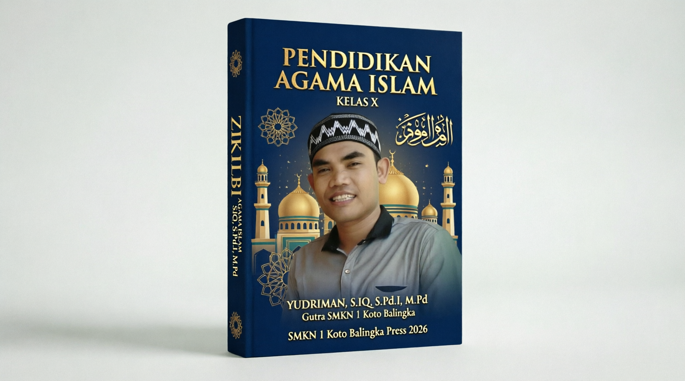

Yudriman, SIQ, S.Pd.I, M.Pd
Penulis & Pendidik
SMKN I KOTO BALINGKA
Edisi Semester 1
Pendidikan Agama Islam
Kelas X
Sebuah panduan komprehensif yang dirancang untuk membentuk karakter islami, mengasah kompetensi dalam kebaikan, dan membangun etos kerja yang berlandaskan nilai-nilai Al-Qur'an dan Hadis.